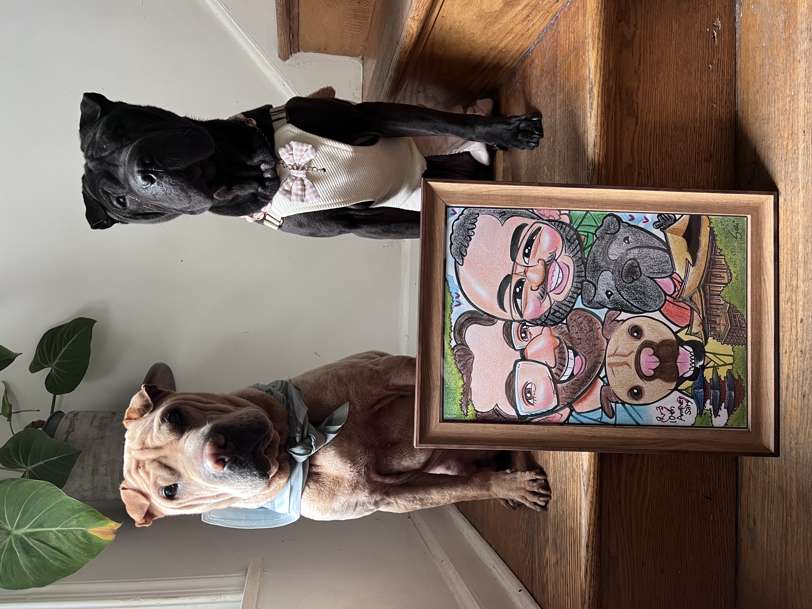

Born in California and raised in Kansas, I was the first in my family to attend college. I earned my BA in Sociology and Political Science with Honors from the University of Kansas, where I first discovered the power of social science to illuminate the structures shaping people’s lives.
I went on to complete my MA and PhD in Sociology at the University of Texas at Austin, where my dissertation—awarded the 2020 Kenneth Sherrill Prize for Best Dissertation Proposal in LGBT Politics by the American Political Science Association—examined how rival transnational networks shape the global trajectory of LGBT+ rights.
I joined the faculty at Princeton University in 2021, where I am an Assistant Professor in the Department of Sociology. I am also a Faculty Associate in the Program in Gender and Sexuality Studies and the Office of Population Research, and I currently hold the Robert K. Root University Preceptorship (2025–2028).
My research focuses on how organizations and institutions function as sites and conduits of social change—and resistance to it. I study the global politics of LGBT+ rights, the role of civil society in diffusing and contesting human rights norms, and how nonprofits shape culture, policy, and democratic life. I am currently completing a book, Architectures of Hate, which examines how U.S. civil society is undoing global LGBTQ+ rights—and democracy with it.
Outside of work, I am the proud dog dad to Maddix and Lennix.
